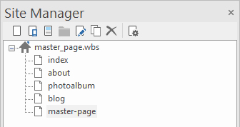
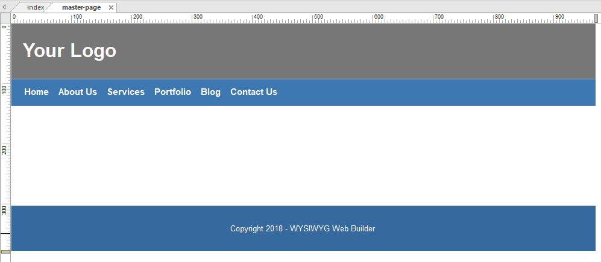
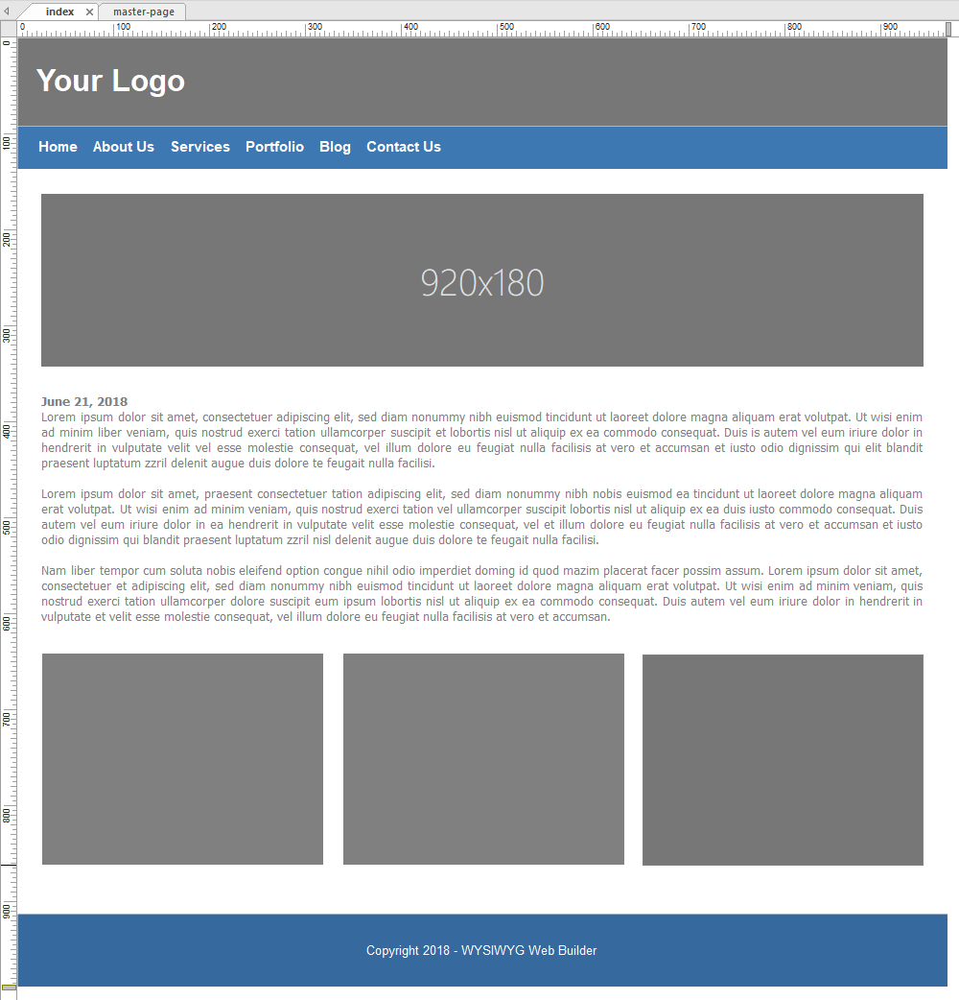
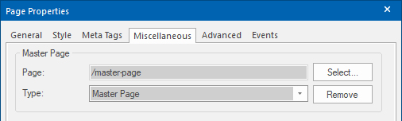

How to use Master Pages?
WYSYWYG Web Builder supports 3 master page concepts:
• Embedded Page
• Master Frame
• Master Page
In this tutorial we will describe the latest addition to application: Master Pages. The other two concepts are explained here: Embedded Page and Master Frame
WYSYWYG Web Builder supports 3 master page concepts:
• Embedded Page
• Master Frame
• Master Page
In this tutorial we will describe the latest addition to application: Master Pages. The other two concepts are explained here: Embedded Page and Master Frame
You can create a master page for common elements such as navigation bar, logo and footer that will used by other web pages.
Any changes made to the master page will be reflected on other web pages that use this master page. If the master page includes a footer then it will automatically be moved if you add more content to the page.
Step 1
Insert a new page and call it 'master-page'.
Any changes made to the master page will be reflected on other web pages that use this master page. If the master page includes a footer then it will automatically be moved if you add more content to the page.
Step 1
Insert a new page and call it 'master-page'.

The master page has a Page Header, Page Footer and a menu.

Step 2
To use the master page in another page:
- Open the Page Properties->Miscellaneous
- Click Select to the select page.
- Set Type to Master Page
To use the master page in another page:
- Open the Page Properties->Miscellaneous
- Click Select to the select page.
- Set Type to Master Page

Demo of the master page:
https://www.wysiwygwebbuilder.tk/support/masterpage/index.html
Demo of the master page with breakpoints:
https://www.wysiwygwebbuilder.tk/support/masterpage/index-rwd.html
Demo of the master page with Layout Grids:
https://www.wysiwygwebbuilder.tk/support/masterpage/index-layoutgrid.html
Download example projects:
https://www.wysiwygwebbuilder.tk/support/masterpage/masterpage.zip
Related tutorials
How to use Embedded Pages?
How to use Master Frames?
https://www.wysiwygwebbuilder.tk/support/masterpage/index.html
Demo of the master page with breakpoints:
https://www.wysiwygwebbuilder.tk/support/masterpage/index-rwd.html
Demo of the master page with Layout Grids:
https://www.wysiwygwebbuilder.tk/support/masterpage/index-layoutgrid.html
Download example projects:
https://www.wysiwygwebbuilder.tk/support/masterpage/masterpage.zip
Related tutorials
How to use Embedded Pages?
How to use Master Frames?

Click 'OK' and you will notice that the master page is rendered in the background of the page.
Now you can start adding other objects to page.
Now you can start adding other objects to page.